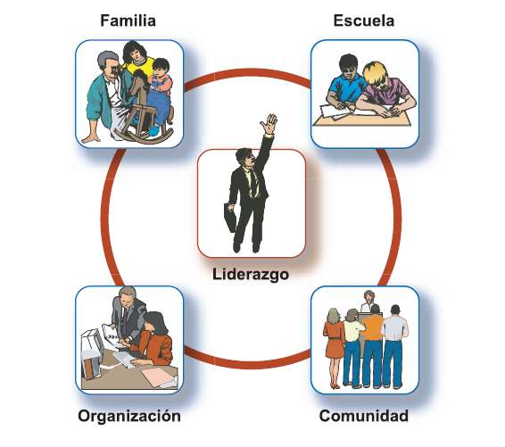

✅ Esta actividad ha sido marcada como completada en tu progreso
“El éxito de un equipo no consiste en ganar sino en trabajar en equipo para
ganar siempre y no solamente por casualidad.”
Anónimo.
Concepto
El liderazgo involucra un conjunto de relaciones entre seres humanos, en donde uno de ellos asumirá la
responsabilidad de conocer las capacidades, habilidades y destrezas propias, y de quienes forman el grupo,
para impulsar su desarrollo y coordinar los esfuerzos para lograr objetivos comunes. El liderazgo es un proceso
recíproco e interactivo entre varias personas (Cf. Alvesson y Sveningsson, 2003: 360).
El liderazgo es la habilidad y la acción que se tiene para orientar, influir, conducir y dirigir a otros para el
logro de una meta en común, aplicando conocimientos, habilidades, aptitudes y actitudes.
AUTORES COMO FELDMAN DEFINEN EL LIDERAZGO CENTRÁNDOSE EN EL LÍDER Y CÓMO ÉL AFECTA LOS SIGNIFICADOS,
LAS IDEAS, LOS VALORES, COMPROMISOS Y EMOCIONES DE LOS DEMÁS MIEMBROS DE UN GRUPO.
FELDMAN AFIRMA QUE “EL LIDERAZGO SE TRATA DE QUE UNA PERSONA TENGA EL PODER DE INFLUIR A OTROS.” ...
“EL LIDERAZGO ALINEA A LA GENTE ALREDEDOR DE UN OBJETIVO COMPARTIDO. SE TRATA DE INFLUENCIAR A LOS OTROS A
TRABAJAR COOPERATIVAMENTE, CONSTRUCTIVAMENTE, Y CON MUTUA CONFIANZA PARA AFRONTAR Y RESOLVER LAS DIFICULTADES
Y DIFERENCIAS” (FELDMAN, 1999:2-3).
El término liderazgo se refiere a un conjunto de relaciones humanas, a una capacidad o estilo de conducta y a
un rol en las relaciones con los otros. (Cf. Alvesson y Sveningsson, 2003)..
El liderazgo es un rol susceptible de ser adoptado por cualquier ser humano, independientemente de su nivel
educativo, jerárquico u ocupacional. Así, se ha comprendido que el liderazgo puede ser asumido tanto en las
organizaciones como en la familia, por mujeres o por hombres.
Teorías del liderazgo
Los esfuerzos de comprensión de las relaciones humanas o sociales
que involucra el liderazgo, han derivado en numerosas teorías que tratan de analizar y
sistematizar alguno de sus rasgos. En este sentido, en la medida que cada teoría considera una
parte del liderazgo, pueden ser complementarias, y su consideración nos permite una visión más
amplia sobre el significado del liderazgo.
Según Nelligan (1999), se pueden agrupar las teorías del liderazgo en 5 aspectos:
HAZ CLIC EN LOS BOTONES AZULES
TEORÍAS QUE CONSIDERAN LAS CUALIDADES DEL LÍDER
TEORÍAS QUE CONSIDERAN EL CONTEXTO, AMBIENTE O CONDICIONES
TEORÍAS QUE CONSIDERAN LOS RECURSOS DEL LÍDER
TEORÍAS QUE CONSIDERAN LAS ESTRATEGIAS
TEORÍA QUE CONSIDERA LOS RESULTADOS DEL LIDERAZGO
Tipos de liderazgo
El tipo de liderazgo corresponde a un modelo,
que caracteriza la forma como el líder interactúa con el grupo.
HAZ CLIC EN LOS BOTONES AZULES
Formal
Se establece por el cargo, es impuesto por la autoridad y generalmente se asocia a los jefes o directivos.
Informal
Se fundamenta en el ejercicio de la autoridad de una persona, sin importar su nivel jerárquico. Es otorgado y reconocido por los colaboradores o miembros de un grupo o equipo de personas.
Carismático
Sus seguidores le siguen por su personalidad (simpatía, amabilidad, etc).
Tradicional
Hereda el poder por costumbre, o por pertenecer a un grupo familiar.
Legal
Es elegido por métodos oficiales, ya sea por elecciones, votaciones y/o por demostrar su calidad de experto sobre los demás.
Autoritario
Concentra el poder de decisión.
Paternalista
Mantiene la dependencia por sobreprotección.
De laissez-faire
Da muy poca o ninguna dirección al grupo.
Democrático
Involucra a los miembros en la planificación y desarrollo de las actividades.
Participativo
Faculta y motiva a los demás y promueve su participación.
Por objetivos, resultados o producción
Sus seguidores le siguen por su personalidad (simpatía, amabilidad, etc).
Por la relación con las personas o los empleados
Es elegido por métodos oficiales, ya sea por elecciones, votaciones y/o por demostrar su calidad de experto sobre los demás.
Estilos de liderazgo
El estilo de liderazgo tiene que ver con la personalidad del líder, así como con la
percepción que tienen los demás de él. El estilo se desarrolla a partir de experiencias,
de la formación profesional y de la cultura que posee el líder.
Según Nelligan (1999), las personas que desempeñan el rol de líder adoptan múltiples estilos,
dependiendo de la circunstancia y del proceso que generen en el grupo.
HAZ CLIC EN LOS BOTONES AZULES
Personal
1
Situacional
2
Centrado en Valores o Ético
3
Centrado en Nosotros
4
Humanista
5
Correctivo
6
Maquiavélico
7
Por Objetivos
8
Por resultados
9
Racional
10
Despótico
11
Centralizado
12
Descentralizado
13
Facultativo
14
¿En qué ámbitos ejercemos el liderazgo?
El liderazgo se ejerce en los ámbitos siguientes:
• En la organización: como trabajador(a), integrante de un departamento, área o equipo de trabajo.
• En la familia: como padre, madre, esposo(a), hermano (a).
• En un club deportivo, cultural o social.
• En la comunidad escolar: como director, profesor, estudiante, padre o madre de familia, o miembro de una asociación.
• En una asociación altruista.
• En un grupo religioso.
• En la comunidad: como vecino, representante popular, de actividades políticas o eventos sociales y culturales.

El liderazgo influye en otros, ya que implica no sólo satisfacer las necesidades primordiales de las personas como:
la supervivencia y la seguridad, sino también, preocuparse por sus necesidades superiores como: el afecto, el sentido de
pertenencia, el bien común o el servicio a los demás.
“En la medida en que des a los otros lo que necesitan, ellos a su vez, te darán lo que deseas.”